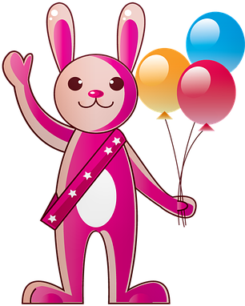
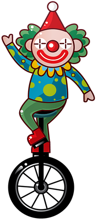
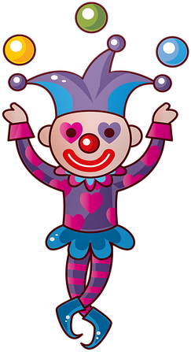
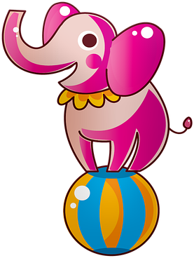

Erin sait comment il faut s'y prendre, avec plus de 10ans d'expérience il trouve toujours le moyen de vous faire rire. Il a été formé à la DNSP d'artiste de cirque - Ecole nationale des arts du cirque, à Rosny-sous-Bois
Reggie arrive tout le temps à faire rigoler les enfants. Formé au DNSCD à COPENHAGUE. Il est l'un des meilleurs dans son domaine.
Raylee venant du DNSP d'artiste de cirque - Ecole nationale des arts du cirque, à Rosny-sous-Bois. Il saura vous impressionner par ses figures magiques.
Raylee et Vic sont frères. C'est en duo qu'ils vous éblouiront. Il a également apprit au DNSP d'artiste de cirque - Ecole nationale des arts du cirque, de Rosny-sous-Bois.
Jody aussi vient du DNSP d'artiste de cirque de Rosny-sous-Bois. Il est notre talentueux équilibriste. Jody trouve toujours le moyen de vous impressionner.
En plus du sa formation au DNSP d'artiste de cirque de Rosny-sous-Bois, Lane arrive tout droit du PNSD - Pôle National Supérieur Danse en Provence Côte d'Azur. Lane ne fait que trouver des tours pour vous époustoufler.
Georgio, de plus de 10 ans de carrière, vient de La Raque. Il s'est formé là bas en BTSA avec opt.PA.
Tanner à 28ans. C'est lui le chef des siens, ou du moins le représentant. Il en est tellement fier qu'il a hâte de vous le montrer sur scène.
Shay à 8ans. Souvent le favori des enfants, il adore monté sur scène. Il espère vous voir très prochainement.